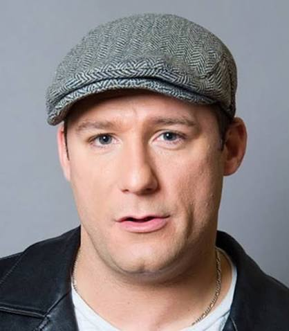

DAVE RUSSO: BOSTON’S COMEDY POWERHOUSE
From the wrestling mats of Massachusetts to the bright lights of Las Vegas, Dave Russo has spent his career mastering the art of the crowd. A staple of the New England comedy scene, Dave is widely recognized for his high-energy, improvised style and quick-fire storytelling.
A former state-champion wrestler, Dave swapped the mat for the spotlight, gaining national attention on Wayne Newton’s The Entertainer on E!. As the only comedian to reach the finals, he secured a Las Vegas headlining contract, cementing his status as a nationally recognized talent.
"[Insert a real testimonial from a client or venue here to establish social proof.]"
ON STAGE AND ON SCREEN
Beyond his roles on Dirty Water TV and The Today Show, Dave is a dedicated philanthropist collaborating with the Neely House and Celebrities for Charity. Whether performing for sold-out crowds or hosting corporate events, he brings unparalleled energy to the stage.
Russo on the High Seas
Catch Dave touring internationally on his popular cruise performances.
View Upcoming Dates